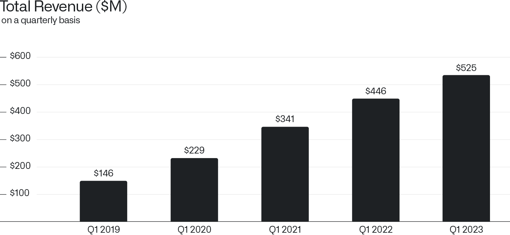
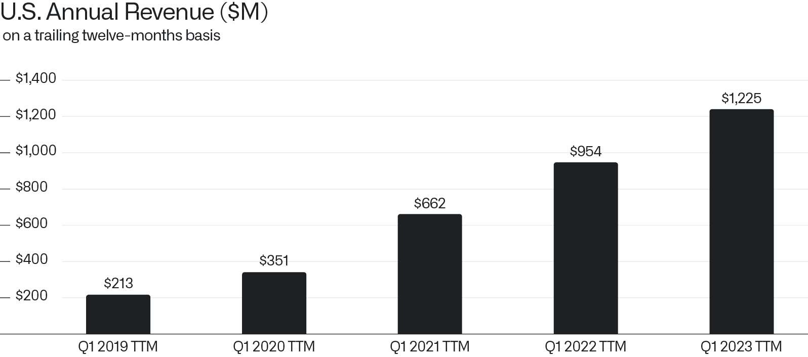

致股东信
2023年5月8日

I.
本季度我们再次实现盈利。截至2023年3月31日的会计期间，按照通用会计准则，我们实现了1700万美元的净利润。目前我们预计，今年剩余的每个季度都将保持盈利。此外，上一季度我们实现了公司历史上首次营业利润。第一季度我们创造了5.25亿美元的营收，这一成绩超越了我们的初步指引，但仍低估了我们面前机遇的规模。

最新大语言模型的问世，为世界带来了迈向更通用人工智能的真正曙光，这将彻底改变企业软件的格局。幸运的是，我们早在多年前就开始构建基础架构，这正是要在私有数据集背景下切实释放这些新技术力量所必需的。如今越来越清晰的是，为了使这些模型演变为对大型组织具有变革价值的工具，必须拥有一个将基础软件架构能力与最新大语言模型能力相结合的平台。而我们正在构建的，正是这样一个平台。
II.
市场对我们全新的人工智能平台（AIP）的参与深度和需求是史无前例的。我们目前正在调动全公司与销售团队，将这种内生的和 inbound 的关注转化为我们在市场中影响力的扩张。AIP 使商业和政府领域的各类企业能够利用大语言模型的力量，处理其自有的私有数据集。本月，我们将向选定的客户开放该平台的首个迭代版本。我们已经与潜在客户进行了数百次关于部署该软件的对话，目前正就平台各组件的访问条款和定价进行谈判。
III.
拥抱最新、最先进的生成式人工智能所带来的风险是切实存在的。在软件设计上，我们刻意要求在现实世界中采取行动（例如军事场景中的目标打击行动）之前，必须有人类操作员的参与和监督。机器必须始终服从其创造者。我们深知，民主政权最终在多大程度上试图限制这些能力的发展和更广泛部署，将取决于软件行业是否有意愿且有能力构建起既约束其使用、又驾驭其力量的防护栏。我们还必须牢记，非民主政权绝不会允许其人工智能的发展受制于此类道德考量。
当前科技行业的一些巨头正目睹自身业务被大语言模型颠覆，他们同样未能认识到以道德准则为核心理念构建软件的重要性。这些公司的商业模式在本质上要求且依赖于对我们最私密信息的变现。限制此类数据的使用，必将削弱其核心利益的竞争力。他们最终建立的访问控制和审计能力，只不过是在系统性地利用我们的个人信息多年之后，才勉强嫁接到其产品之上的。然而，我们从一开始就明白，保护隐私对于我们的成功至关重要。因此，我们构建的系统（包括 AIP）在核心层面就融入了保护机制。
如今，这些自诩的科技行业巨头不仅在这些新型人工智能能力的技术开发上被超越，在其使用的伦理话语中也已被边缘化。
IV.
我们在美国的强劲势头和持续增长，反映了美国机构拥抱新技术的速度。在截至2023年3月31日的十二个月期间，我们从美国客户那里获得了12.3亿美元的营收，较上一同期的9.54亿美元实现了28%的年增长率。

在宏观经济存在显著不确定性的时期，且在各行各业尚未全面觉醒并认识到大语言模型及其他形式生成式人工智能潜力的背景下，我们依然在最重要的市场实现了近30%的年增长率。我们预计，AIP 的发展将标志着我们进军历程中一个更为重要的时刻。
诚挚地，

Alexander C. Karp
首席执行官兼联合创始人
Palantir Technologies Inc.
前瞻性陈述
本信件包含符合 1995 年《私人证券诉讼改革法案》“安全港”条款定义的“前瞻性陈述”，包括但不限于关于我们的财务展望、产品开发及相关时间表、分销和定价、我们软件平台的预期效益和应用、业务战略和计划（包括与我们的 AIP 相关的战略和计划、销售和营销工作、销售团队、合作伙伴和客户）、业务投资、市场趋势和市场规模、机遇（包括增长机遇）、我们对现有和潜在投资及与各实体商业合同的预期、我们对宏观经济事件和外汇波动的预期以及定位的陈述。这些前瞻性陈述自首次发布之日起作出，基于当前的预期、估计、预测以及管理层的信念和假设。诸如“指引”、“预期”、“预计”、“应当”、“相信”、“希望”、“目标”、“预测”、“计划”、“目标”、“估计”、“潜在”、“预言”、“可能”、“将”、“也许”、“可”、“打算”、“应当”以及这些术语的变体或否定形式和类似表达，均旨在识别这些前瞻性陈述。前瞻性陈述受诸多风险和不确定性的影响，其中许多涉及我们无法控制的因素或情况。由于多种因素，我们的实际结果可能与前瞻性陈述中陈述或暗示的结果存在重大差异，这些因素包括但不限于我们向美国证券交易委员会（即“SEC”）提交的文件中详述的风险，包括我们截至 2022 年 12 月 31 日财年的 10-K 表年度报告，以及我们可能不时向 SEC 提交的其他文件和报告，包括提供我们截至 2023 年 3 月 31 日财季收益新闻稿的 8-K 表当前报告，以及我们截至 2023 年 3 月 31 日财季的 10-Q 表季度报告。特别是，以下因素等可能导致我们的结果与此类前瞻性陈述中明示或暗示的结果存在重大差异：我们成功执行业务和增长战略的能力；我们的现金及现金等价物满足流动性需求的能力；市场对我们平台、产品和服务整体的需求；我们增加新客户数量及从客户处产生收入的能力；我们能否将客户合同的部分或全部合同价值确认为收入，包括客户可用的任何合同选项或受便利终止条款约束的合同期限；我们漫长且不可预测的销售周期；我们与第三方成功执行渠道销售和其他战略计划的能力；我们保留和扩大客户群体的能力；我们未来期间经营业绩和关键业务指标的季度波动；我们业务的季节性；我们平台的实施过程可能复杂且耗时；我们成功开发和部署新技术以满足现有或潜在客户需求的能力；我们使平台和产品更易于安装、消费和使用的能力；我们维护和提升品牌声誉的能力；随着业务增长以及追求业务和财务目标，我们维护和提升企业文化的能力；关于我们的新闻或社交媒体报道，包括但不限于呈现或依赖不准确、误导性、不完整或具有破坏性信息的报道；近期或未来的全球宏观经济和地缘政治事件（如持续的俄乌冲突、美国及其他国家通胀和利率上升、货币政策变化、金融服务业不稳定以及外汇波动）对我们公司或现有或潜在客户及合作伙伴的业务和运营的影响；以及任何对客户或第三方数据的违规访问。
本信件中包含的前瞻性陈述代表我们在本信件发布之日的观点。我们预计后续的事件和发展将导致我们的观点发生变化。我们不承担更新或修订任何前瞻性陈述的意图或义务，无论是由于新信息、未来事件还是其他原因。这些前瞻性陈述不应被视为代表我们在本信件日期之后任何日期的观点。过往业绩并不必然代表未来结果。
其他说明
本信件可能包含基于独立行业出版物或其他公开信息以及基于我们内部来源的其他信息的统计数据、估计、预测和陈述。这些信息涉及许多假设和限制，特此提醒您不要过分依赖这些估计。我们并未独立核实这些行业出版物和其他公开信息中包含的数据的准确性或完整性。因此，我们不对该等数据的准确性或完整性作出任何陈述，亦不承担在本信件日期后更新该等数据的义务。
在讨论我们的业务时，本信件可能提及各种增长率。除非另有说明，这些增长率均反映同比比较。
收到本信件即表示您承认，您将自行负责对市场及我们的市场地位进行评估，并将自行进行分析，且全权负责对所提供的信息形成自己的看法，包括关于我们业务潜在未来表现的信息。